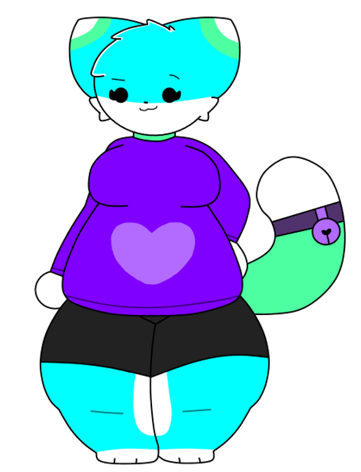

chordie
basic info
Gender: Female
Height: 5'7
Weight: 201 lbs
Sexuality: Lesbian
biography
Chordie is a cyan cat with a purple sweater and some dark shorts. Surprisingly, she is not FMAJ's sister, but rather his best friend. She works at the same shop as him, and despite him being annoying sometimes, she still loves him with all her heart. Oh, and Chordie is pretty relaxed most of the time and also fairly nice with people. Her voice is vocoded to the Full Chord preset from Orange Vocoder.